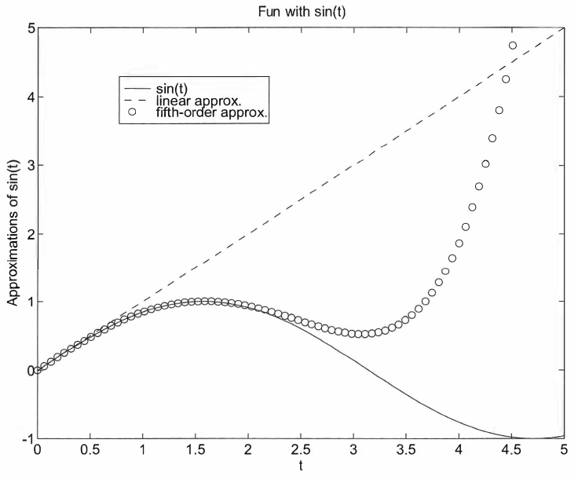
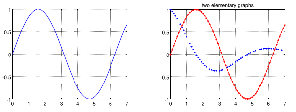
import matplotlib.pyplot as plt
import numpy as np
# ...
figsize argument in plt.figure()import matplotlib.pyplot as plt
import numpy as np
plt.figure(figsize=(12, 8)) # height vs width
# ...
plot functionplot: plots any x and y pairsplt.plot(x, y, 'style-option')
where
x: 1-D arrayy: 1-D array'style-option' specifies
Examples:
plt.plot(x,y): plots x versus y with a solid lineplt.plot(x,y,'--'): plots x versus y with a dashed lineplt.plot(x,y,'r--'): plots x versus y with a red dashed lineplt.plot(x,y,'r^'): plots x versus y with red trianglesplt.plot(x,y,'r^-'): plots x versus y with red triangles on a solid lineimport numpy as np
import matplotlib.pyplot as plt
# generate x data:
t = np.linspace(0,2*np.pi,100)
# generate y data:
f = np.sin(t)
# plot with a solid line:
plt.plot(t, f)
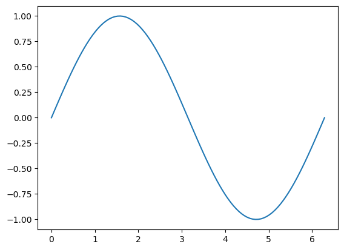
'style-option'| Color | Line | Marker |
|---|---|---|
y yellow |
- solid |
+ plus sign |
m magenta |
-- dashed |
o circle |
c cyan |
: dotted |
* asterisk |
r red |
-. dash-dot |
x x-mark |
g green |
none no line |
. point |
b blue |
^ up triangle |
|
w white |
s square |
|
k black |
d diamond |
plt.plot(x,y,'r'): plots x versus y with a red solid lineplt.plot(x,y,':'): plots x versus y with a dotted lineplt.plot(x,y,'b--'): plots x versus y with a blue dashed lineplt.plot(x,y,'+'): plots x versus y as unconnected points marked by +'style-option' exampleimport numpy as np
import matplotlib.pyplot as plt
# generate x data:
t = np.linspace(0,2*np.pi,100)
# generate y data:
f = np.sin(t)
# plot with connected red squares
plt.plot(t, f, "rs-")
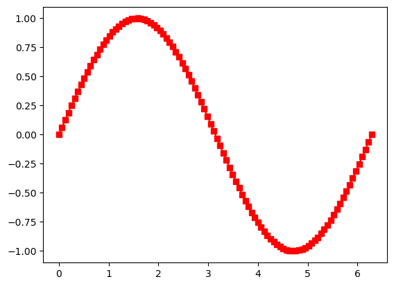
plt.xlabel('x (m)'): labels the x-axis with x (m)plt.ylabel('p (Pa)'): labels the y-axis with p (Pa)plt.title('Pressure Variation'): titles the plot with Pressure Variationplt.text(5,-180,'Note this dip'): annotates "Note this dip" at the location (5, -180) in the plot coordinatesimport matplotlib.pyplot as plt
import numpy as np
x = np.linspace(0,2*np.pi,100)
p = np.sin(x)*np.exp(x)
plt.plot(x, p, 'k') # plots
plt.xlabel('x (m)') # creates the label for x-axis
plt.ylabel('p (Pa)') # creates the label for y-axis
plt.title('Pressure Variation') # creates a title
plt.text(5,-180,'Note this dip') # annotates a text
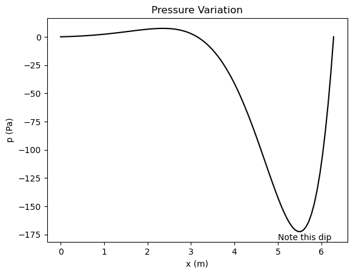
plt.grid() function draws gridimport matplotlib.pyplot as plt
import numpy as np
x = np.linspace(0,2*np.pi,100)
p = np.sin(x)*np.exp(x)
plt.plot(x, p, 'k')
plt.xlabel('x (m)') # creates the label for x-axis
plt.ylabel('p (Pa)') # creates the label for y-axis
plt.title('Pressure Variation') # creates a title
plt.text(5,-180,'Note this dip') # annotates a text
plt.grid() # adds grid
plt.show()
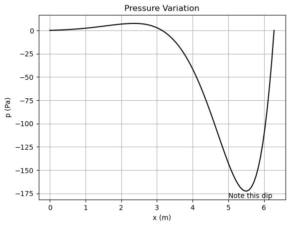
ax.plot function execution, a plot is generated on the same figureEx.:
import matplotlib.pyplot as plt
import numpy as np
# Generate data points
x1 = np.linspace(0, 100, 50)
x2 = np.linspace(0, 100, 1000)
f = 20*x1 + 3
g = 3*x1**2 + np.sqrt(x1)
h = 3e3*np.sin(5*x2) * np.exp(-0.5*x2)
# Plot an overlay 2D plot for f, g, h
plt.plot(x1, f, "o", label = "f(x) = 20x + 3")
plt.plot(x1, g, "^-", label = "g(x) = 3x^2 + x^(1/2)")
plt.plot(x2, h, "-", label = "h(x) = 3*10^3*sin(5x) * exp(-0.5x)")
plt.legend()
# Other stuff
plt.title("Plot for f(x), g(x), and h(x)")
plt.xlabel("x")
plt.ylabel("y")
plt.grid()
plt.show()
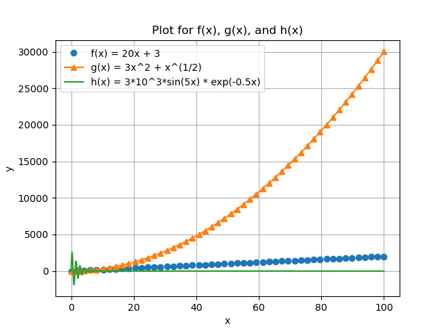
plt.subplot will be added before each subplot sectionimport matplotlib.pyplot as plt
import numpy as np
# generate data
x = np.linspace(0,2*np.pi,100)
p = np.sin(x)*np.exp(x)
g = np.sin(5*x)/x
# access first subplot
plt.subplot(1,2,1)
# then plot
plt.plot(x, p, 'k')
plt.xlabel('x (m)')
plt.ylabel('p (Pa)')
plt.title('Pressure Variation')
plt.grid()
# access second subplot
plt.subplot(1,2,2)
# then plot
plt.plot(x, g, 'ro-')
plt.xlabel('x')
plt.ylabel('sin(5x)/x')
plt.title('sin(5x)/x vs x')
plt.tight_layout()
plt.show()
Note:- plt.tight_layout() adjusts the gaps between the figures such that labels and titles are clearly seen
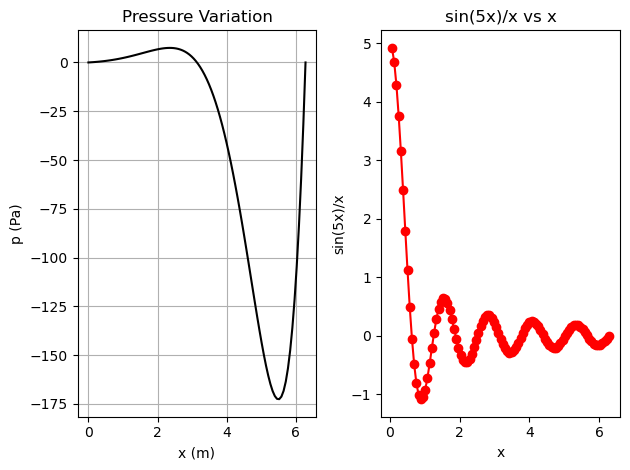
import matplotlib.pyplot as plt
import numpy as np
x = np.linspace(0,2*np.pi,100)
y1 = np.sin(x)
y2 = x
y3 = x - (x**3)/6 + (x**5)/120
y4 = np.sin(x)*np.exp(x)
# plotting the first frame in a 2x2 grid
plt.subplot(2,2,1)
plt.plot(x,y1)
plt.xlabel("x")
plt.ylabel("y1")
plt.title("First subplot")
plt.grid()
# plotting the second frame in a 2x2 grid
plt.subplot(2,2,2)
plt.plot(x,y2)
plt.xlabel("x")
plt.ylabel("y2")
plt.title("Second subplot")
plt.grid()
# plotting the third frame in a 2x2 grid
plt.subplot(2,2,3)
plt.plot(x,y3)
plt.xlabel("x");
plt.ylabel("y3");
plt.title("Third subplot");
plt.grid()
# plotting the fourth frame in a 2x2 grid
plt.subplot(2,2,4)
plt.plot(x,y4)
plt.xlabel("x");
plt.ylabel("y4");
plt.title("Fourth subplot");
plt.grid()
plt.tight_layout()
plt.show()
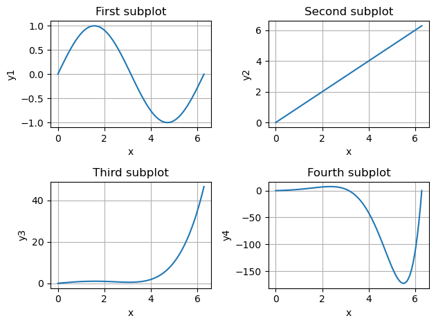
import matplotlib.pyplot as plt
import numpy as np
x = np.linspace(0,10,100)
t = np.linspace(0,4,50)
f = np.exp(-x) * np.sin(2*np.pi*x)
g = 5*x
h = 1/2 * 9.81 * t**2
plt.plot(x,f,"k")
plt.title("f(x) vs x")
plt.xlabel("x")
plt.ylabel("f(x)")
plt.grid()
plt.show()
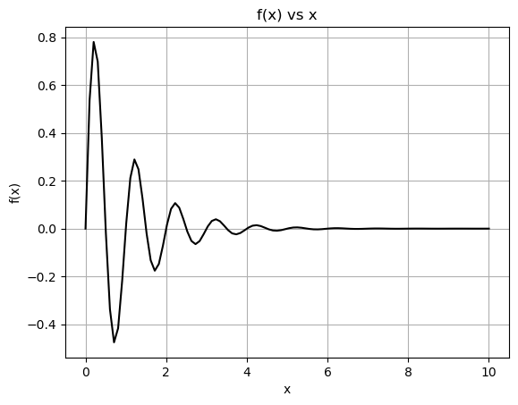
import matplotlib.pyplot as plt
import numpy as np
# DATA GENERATION
# x-axis:
x = np.linspace(0,2*np.pi,100)
# f function (discontinuous):
f = np.zeros((100,))
f0 = np.sin(x[(0 <= x) & (x < np.pi/2)])
f[0:np.size(f0)] = f0
f1 = x[(np.pi/2 <= x) & (x < np.pi)]
f[np.size(f0):np.size(f0) + np.size(f1)] = 0
f2 = np.sin(x[(np.pi <= x) & (x < 3*np.pi/2)])
f[np.size(f0) + np.size(f1):np.size(f0) + np.size(f1) + np.size(f2)] = f2
# no need to evaluate the last section because it also remains 0 in f
# other two functions:
g = -x**2 + 3
h = 3*np.ones((np.size(x),))
# PLOTTING
# first subplot:
plt.subplot(1,2,1)
plt.plot(x,f,"ks-")
plt.title("f(x) vs x")
plt.ylabel("f(x)")
plt.xlabel("x")
plt.grid()
# second subplot:
plt.subplot(1,2,2)
plt.plot(x,g,"b-",label="g(x) = -x**2 + 3")
plt.plot(x,h,"r-",label="h(x) = 3")
plt.title("Two functions")
plt.ylabel("outputs")
plt.xlabel("x")
plt.legend()
plt.grid()
plt.tight_layout()
plt.show()
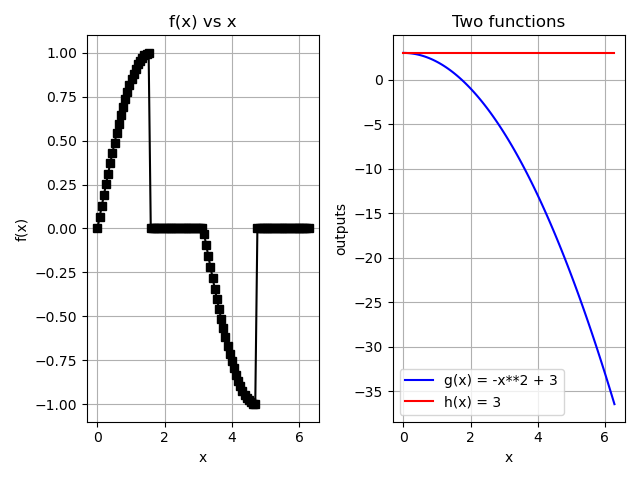